import numpy as np
import pandas as pd
import matplotlib.pyplot as plt
import seaborn as sns13 Data Reshaping
Data reshaping changes how values are organized into rows and columns. For example, life expectancy data might have one row per country and year, or one row per country with a separate column for each year. Both layouts contain the same measurements, but they support different tasks: the first makes it easy to plot trends over time, while the second makes it easy to compare years side by side.
This chapter introduces tools for moving between these layouts, distinguishes reshaping from aggregation, and shows how to check the results.
By the end of this chapter you should be able to:
- Tell long format from wide format, and say which one a task needs: plotting by group, comparing columns side by side, or summarizing.
- Reshape a grouped result with
unstack()andstack(), choose which index level moves withlevel=, and turn multi-level labels back into ordinary columns. - Turn a long table wide with
pivot_table()and an explicitaggfunc, and withpivot()when each cell holds exactly one value. - Turn a wide table long with
melt()(id_vars,var_name,value_name). - Check a reshape: count rows before and after, check what each cell combined, and restore column types that reshaping changes.
Complete the practice activity after the worked examples.
13.1 Set Up Your Chapter Files
Download the Data Reshaping practice kit. Extract stat303-data-reshaping inside the chapters folder of your stat303-1 course folder, open stat303-1 in VS Code, and select the course environment. The terminal opens in stat303-1, so move it into the kit with cd chapters and then cd stat303-data-reshaping before you render the activity.
stat303-1/
├── .venv/
├── assignments/
└── chapters/
└── stat303-data-reshaping/
├── data_reshaping_examples.ipynb
├── activity13.ipynb
├── README.md
└── data/
└── gdp_lifeExpectancy.csvRun data_reshaping_examples.ipynb for the lesson and complete activity13.ipynb for your own activity report, with stat303-data-reshaping as the notebook working folder. The data is read with the relative path "data/gdp_lifeExpectancy.csv", so the notebooks find it only when that folder is the working folder.
Environment check: This chapter uses NumPy, pandas, matplotlib, and seaborn, all of which are already in the course environment. If an import fails, check the selected notebook kernel first: it must be the course environment, stat303-1/.venv, as in Project Environments, Packages, and File Paths.
13.2 Introduction to Data Reshaping
The two layouts differ in where the year values appear:
- Long format stacks the values into few columns and many rows. Each row is one observation: one country in one year, with its life expectancy.
- Wide format spreads the values across many columns and few rows. Each row is one unit, such as a country, with one column per year.
Neither format is better in general; the right one depends on what you are about to do.
13.2.1 Why Data Reshaping Matters
- Different tools need different layouts. Seaborn’s
hue=andcol=, from the visualization chapters, expect long data: one column holding the group. A comparison of 1957 with 2007 is one subtraction in wide data, where each year is its own column. - Some calculations are easy in one layout and awkward in the other. Change over time per country is a column difference when wide; a mean per year is a
groupby()when long. - Combining datasets requires clear identifiers. A country–year table can be joined to country-level information using country as the key. The next chapter explains how to choose keys and check the resulting matches.
13.2.2 Understanding Wide vs. Long Format
A small example with three countries and three years shows both layouts. The data starts long:
toy_long = pd.DataFrame({
"country": ["USA", "USA", "USA", "Canada", "Canada", "Canada", "Mexico", "Mexico", "Mexico"],
"year": [2000, 2005, 2010] * 3,
"lifeExp": [76.8, 77.5, 78.5, 79.2, 80.1, 81.0, 74.1, 75.2, 76.5],
})
toy_long| country | year | lifeExp | |
|---|---|---|---|
| 0 | USA | 2000 | 76.8 |
| 1 | USA | 2005 | 77.5 |
| 2 | USA | 2010 | 78.5 |
| 3 | Canada | 2000 | 79.2 |
| 4 | Canada | 2005 | 80.1 |
| 5 | Canada | 2010 | 81.0 |
| 6 | Mexico | 2000 | 74.1 |
| 7 | Mexico | 2005 | 75.2 |
| 8 | Mexico | 2010 | 76.5 |
Nine rows and three columns: each row is one country in one year. pivot(), explained in the pivoting section below, turns the year values into column headers:
toy_wide = toy_long.pivot(index="country", columns="year", values="lifeExp")
toy_wide| year | 2000 | 2005 | 2010 |
|---|---|---|---|
| country | |||
| Canada | 79.2 | 80.1 | 81.0 |
| Mexico | 74.1 | 75.2 | 76.5 |
| USA | 76.8 | 77.5 | 78.5 |
Three rows, three year columns, and the same nine values. The diagram follows one of them, Canada in 2005, through the reshape in each direction:
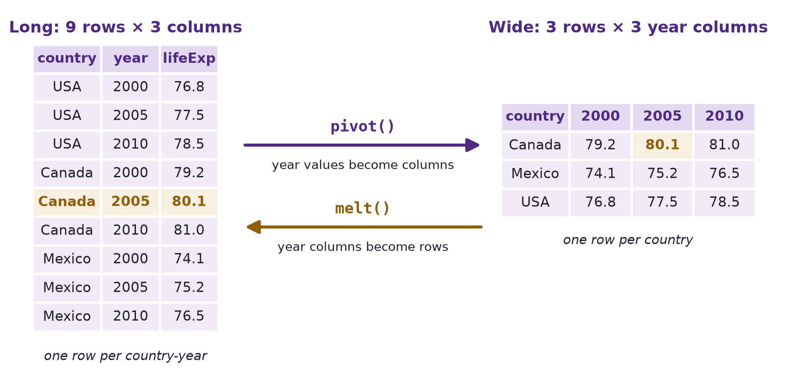
pivot() turns the year values into column headers; melt() turns the year columns back into rows. Canada’s 2005 value, 80.1, is highlighted in both.The two layouts hold the same values but suit different tasks. With one column per year, a change over time is one subtraction; with one column per variable, seaborn draws one line per country:
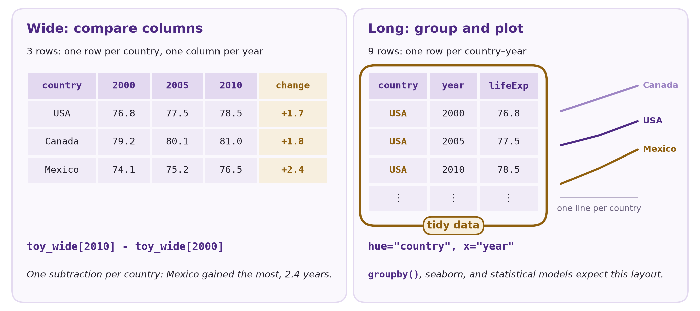
toy_wide[2010] - toy_wide[2000] is one subtraction per country, and Mexico gained the most, 2.4 years. Long format, 9 rows with one row per country and year, suits grouping and plotting: hue="country" and x="year" draw one line per country, and groupby(), seaborn, and statistical models expect this layout. The long table is circled as tidy data.
NoteTidy data
You will often see long format described as tidy data: each variable is a column, each observation is a row, and each value is a cell. In the long table, circled in the figure above, country, year, and lifeExp are each one column, and each row is one observation. In the wide table, the single variable “year” is spread across three column headers. Tidy data is what groupby(), seaborn, and most statistical tools expect, which is why data is so often melted before it is analysed.
13.2.3 Reshaping Tools in Pandas
Pandas has two pairs of reshaping tools. The first pair works on labels that are already in the index, such as a grouped result; the second works on ordinary columns of a table. The chapter takes them in this order:
| Function | Direction | Works on |
|---|---|---|
unstack() |
Long → Wide | Moves an index level into the column labels |
stack() |
Wide → Long | Moves a column level into the index |
pivot_table(), pivot() |
Long → Wide | Columns of a long table; pivot_table() summarizes, pivot() only rearranges |
melt() |
Wide → Long | Columns of a wide table |
To choose among them, start with where the labels you want to move are, then which direction you are going:
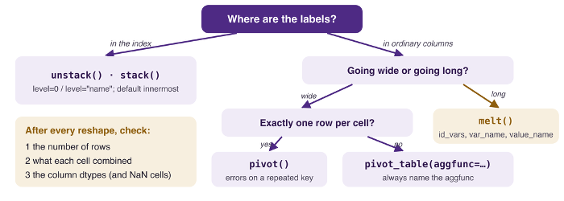
unstack() or stack(); labels in ordinary columns call for melt() to go long, or for pivot() or pivot_table() to go wide, depending on whether each cell gets exactly one row. After every reshape, check the number of rows, what each cell combined, and the column dtypes.The rest of the chapter uses the Gapminder data from Data Grouping and Aggregation: 142 countries every five years from 1952 to 2007. It arrives in long format, one row per country-year:
gdp = pd.read_csv("data/gdp_lifeExpectancy.csv")
print(gdp.shape)
gdp.head()(1704, 6)| country | continent | year | lifeExp | pop | gdpPercap | |
|---|---|---|---|---|---|---|
| 0 | Afghanistan | Asia | 1952 | 28.801 | 8425333 | 779.445314 |
| 1 | Afghanistan | Asia | 1957 | 30.332 | 9240934 | 820.853030 |
| 2 | Afghanistan | Asia | 1962 | 31.997 | 10267083 | 853.100710 |
| 3 | Afghanistan | Asia | 1967 | 34.020 | 11537966 | 836.197138 |
| 4 | Afghanistan | Asia | 1972 | 36.088 | 13079460 | 739.981106 |
13.3 Stacking and Unstacking using stack() and unstack()
The previous chapter grouped life expectancy by continent and year. We start with that result: unstack() moves an index level into the columns, and stack() moves a column level into the index. First watch the year labels move; then we will examine how to choose a level when both axes have multiple levels.
13.3.1 Unstacking (Rows to Columns): unstack()
unstack() turns a long grouped result wide by moving one level of its row index into the columns. Here is the previous chapter’s mean life expectancy per continent and year, a Series whose index has two levels: continent is level 0 and year is level 1 (or -1):
life_by_year = gdp.groupby(["continent", "year"])["lifeExp"].mean()
life_by_year.head()continent year
Africa 1952 39.135500
1957 41.266346
1962 43.319442
1967 45.334538
1972 47.450942
Name: lifeExp, dtype: float64Sixty rows, one per continent–year pair. With no argument, unstack() moves the innermost index level, year, into the column labels, giving one row per continent and one column per year:
life_wide = life_by_year.unstack()
life_wide.round(1)| year | 1952 | 1957 | 1962 | 1967 | 1972 | 1977 | 1982 | 1987 | 1992 | 1997 | 2002 | 2007 |
|---|---|---|---|---|---|---|---|---|---|---|---|---|
| continent | ||||||||||||
| Africa | 39.1 | 41.3 | 43.3 | 45.3 | 47.5 | 49.6 | 51.6 | 53.3 | 53.6 | 53.6 | 53.3 | 54.8 |
| Americas | 53.3 | 56.0 | 58.4 | 60.4 | 62.4 | 64.4 | 66.2 | 68.1 | 69.6 | 71.2 | 72.4 | 73.6 |
| Asia | 46.3 | 49.3 | 51.6 | 54.7 | 57.3 | 59.6 | 62.6 | 64.9 | 66.5 | 68.0 | 69.2 | 70.7 |
| Europe | 64.4 | 66.7 | 68.5 | 69.7 | 70.8 | 71.9 | 72.8 | 73.6 | 74.4 | 75.5 | 76.7 | 77.6 |
| Oceania | 69.3 | 70.3 | 71.1 | 71.3 | 71.9 | 72.9 | 74.3 | 75.3 | 76.9 | 78.2 | 79.7 | 80.7 |
To move a different level, specify it with level=. You can use either its number or its name: level=0 and level="continent" both select the continent level; level=1 and level="year" both select the year level. The next example uses level=0 to move the continents into the columns.
TipPredict before running
After life_by_year.unstack(level=0) (equivalently, level="continent"), what will one row represent, and how many rows and columns will the result have? Check your prediction against the output.
life_by_year.unstack(level=0).round(1).head()| continent | Africa | Americas | Asia | Europe | Oceania |
|---|---|---|---|---|---|
| year | |||||
| 1952 | 39.1 | 53.3 | 46.3 | 64.4 | 69.3 |
| 1957 | 41.3 | 56.0 | 49.3 | 66.7 | 70.3 |
| 1962 | 43.3 | 58.4 | 51.6 | 68.5 | 71.1 |
| 1967 | 45.3 | 60.4 | 54.7 | 69.7 | 71.3 |
| 1972 | 47.5 | 62.4 | 57.3 | 70.8 | 71.9 |
Same sixty values, now with one row per year and one column per continent: the layout you would want for comparing continents within a year. Because the index levels have names, level="continent" refers to the same level and builds the same table:
life_by_year.unstack(level="continent").equals(life_by_year.unstack(level=0))Trueequals() checks that the objects have matching shapes, labels, and values, with matching data dtypes. Row and column order matter, and missing values in matching positions compare as equal. It is a useful check that these two reshapes agree.
13.3.2 Stacking (Columns to Rows): stack()
stack() is the inverse reshape: it turns a wide table long by moving one level of the column labels down into the row index, and it uses the same level= rules as unstack(). life_wide has a single column level, year, so stacking it sends the years back into the index and returns the original long Series:
life_long = life_wide.stack()
print(life_long.shape)
life_long.equals(life_by_year)(60,)TrueTogether, these examples show the two directions: unstack() moves the year level from the index into the columns, and stack() moves it back. The figure summarizes the round trip using a small slice of the data; the moving year labels are shaded gold.
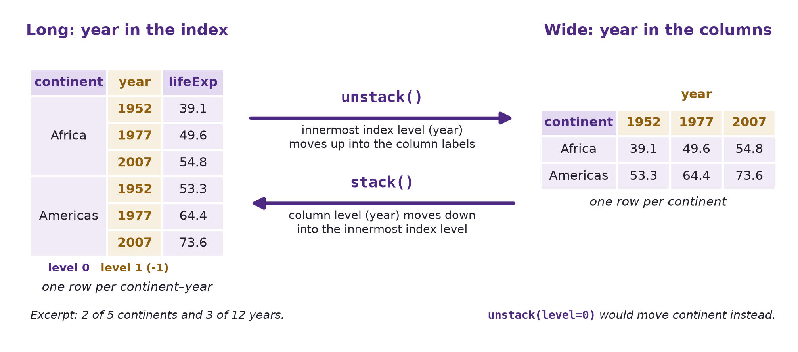
13.3.3 Understanding the level in Multi-Level Index and Columns
The examples above moved year or continent using level=. Levels are easier to identify when they have names; the same idea also applies to numbered column levels. Aggregating several columns with several functions, as agg() does in the previous chapter, returns a table with a two-level index and two-level column labels, which makes a good example:
country_summary = (
gdp.groupby(["continent", "country"])[["lifeExp", "pop", "gdpPercap"]]
.agg(["mean", "std"])
)
country_summary.head()| lifeExp | pop | gdpPercap | |||||
|---|---|---|---|---|---|---|---|
| mean | std | mean | std | mean | std | ||
| continent | country | ||||||
| Africa | Algeria | 59.030167 | 10.340069 | 1.987541e+07 | 8.613355e+06 | 4426.025973 | 1310.337656 |
| Angola | 37.883500 | 4.005276 | 7.309390e+06 | 2.672281e+06 | 3607.100529 | 1165.900251 | |
| Benin | 48.779917 | 6.128681 | 4.017497e+06 | 2.105002e+06 | 1155.395107 | 159.741306 | |
| Botswana | 54.597500 | 5.929476 | 9.711862e+05 | 4.710965e+05 | 5031.503557 | 4178.136987 | |
| Burkina Faso | 44.694000 | 6.845792 | 7.548677e+06 | 3.247808e+06 | 843.990665 | 183.430087 | |
The nlevels attribute counts the levels of the row index and of the column labels:
print(country_summary.index.nlevels, country_summary.columns.nlevels)2 2Two levels each. Printing the columns attribute shows what that means: every column label is a pair, one part from each level.
country_summary.columnsMultiIndex([( 'lifeExp', 'mean'),
( 'lifeExp', 'std'),
( 'pop', 'mean'),
( 'pop', 'std'),
('gdpPercap', 'mean'),
('gdpPercap', 'std')],
)Levels are numbered from the outside in. The outermost level is 0, the next one is 1, and so on. The innermost level can also be written -1, which is handy because it always means “the innermost” however many levels there are. For country_summary:
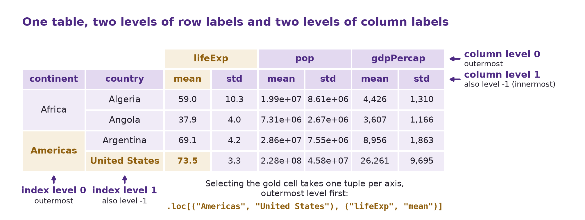
country_summary. The row index has two levels, continent (level 0) and country (level 1, also -1); the column labels have two levels, the variable (level 0) and the statistic (level 1, also -1). The gold cell is selected with one tuple per axis, outermost level first.get_level_values() lists the labels at one level, which is a quick way to check which level a number refers to. Level 0 of the columns holds the variables, and level -1 holds the statistics:
country_summary.columns.get_level_values(0)Index(['lifeExp', 'lifeExp', 'pop', 'pop', 'gdpPercap', 'gdpPercap'], dtype='str')country_summary.columns.get_level_values(-1)Index(['mean', 'std', 'mean', 'std', 'mean', 'std'], dtype='str')Levels can also have names. The names attribute shows them. The index levels are named after the columns you grouped by, but the two column levels that agg() created have no names, shown as None:
print(country_summary.index.names)
print(country_summary.columns.names)['continent', 'country']
[None, None]So level= accepts either form: a name, such as level="continent", when the level has one, or a number, such as level=0, which always works. In this chapter, unnamed column levels are referred to by number.
Finally, because each label is a tuple with one part per level, selecting a single cell takes one tuple for the row and one for the column, from the outermost level inward, just as selecting from a two-level index did in the previous chapter:
country_summary.loc[("Americas", "United States"), ("lifeExp", "mean")]np.float64(73.4785)With two column levels there is a choice. By default stack() moves the innermost column level, level -1, the statistic, into the rows: each country now has a mean row and a std row, with one column per variable.
country_summary.stack().head(4)| lifeExp | pop | gdpPercap | |||
|---|---|---|---|---|---|
| continent | country | ||||
| Africa | Algeria | mean | 59.030167 | 1.987541e+07 | 4426.025973 |
| std | 10.340069 | 8.613355e+06 | 1310.337656 | ||
| Angola | mean | 37.883500 | 7.309390e+06 | 3607.100529 | |
| std | 4.005276 | 2.672281e+06 | 1165.900251 |
Passing level=0 moves the outermost column level, the variable, instead. Each country now has one row per variable, with mean and std as the columns, a convenient layout for reading a variable’s centre and spread side by side:
country_summary.stack(level=0).head(6)| mean | std | |||
|---|---|---|---|---|
| continent | country | |||
| Africa | Algeria | lifeExp | 5.903017e+01 | 1.034007e+01 |
| pop | 1.987541e+07 | 8.613355e+06 | ||
| gdpPercap | 4.426026e+03 | 1.310338e+03 | ||
| Angola | lifeExp | 3.788350e+01 | 4.005276e+00 | |
| pop | 7.309390e+06 | 2.672281e+06 | ||
| gdpPercap | 3.607101e+03 | 1.165900e+03 |
In both results the moved level becomes the new innermost level of the row index. Since unstack() by default moves the innermost index level back to the innermost column level, stacking and then unstacking with the defaults restores the original table:
country_summary.stack().unstack().equals(country_summary)True13.3.4 Back to a Single-Level Table
Multi-level labels are compact for reading but awkward for plotting, filtering, and merging, which expect plain column names. The index part has a tool you already know: reset_index() moves every index level back into an ordinary column. The column part needs one more step: each column label is a pair such as ("lifeExp", "mean"), and joining its two parts with an underscore turns it into one name such as lifeExp_mean.
country_flat = country_summary.reset_index()
country_flat.columns = ["_".join(col).strip("_") for col in country_flat.columns]
country_flat.head()| continent | country | lifeExp_mean | lifeExp_std | pop_mean | pop_std | gdpPercap_mean | gdpPercap_std | |
|---|---|---|---|---|---|---|---|---|
| 0 | Africa | Algeria | 59.030167 | 10.340069 | 1.987541e+07 | 8.613355e+06 | 4426.025973 | 1310.337656 |
| 1 | Africa | Angola | 37.883500 | 4.005276 | 7.309390e+06 | 2.672281e+06 | 3607.100529 | 1165.900251 |
| 2 | Africa | Benin | 48.779917 | 6.128681 | 4.017497e+06 | 2.105002e+06 | 1155.395107 | 159.741306 |
| 3 | Africa | Botswana | 54.597500 | 5.929476 | 9.711862e+05 | 4.710965e+05 | 5031.503557 | 4178.136987 |
| 4 | Africa | Burkina Faso | 44.694000 | 6.845792 | 7.548677e+06 | 3.247808e+06 | 843.990665 | 183.430087 |
After reset_index(), the old index columns have an empty second part, ("continent", ""), so strip("_") removes the trailing underscore that joining leaves on them. The pandas method droplevel() can also flatten labels, by deleting a level outright, but here it would lose part of the meaning: dropping the variable level leaves repeated mean and std labels, while dropping the statistic level repeats each variable name. Joining both parts preserves the variable and the statistic.
The figure traces the column labels through both steps:
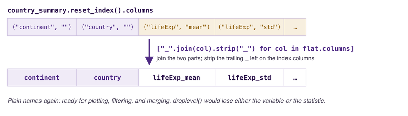
reset_index(), each column label is a pair, such as ("continent", "") or ("lifeExp", "mean"). Joining each pair with an underscore and stripping the trailing underscore gives plain names: continent, country, lifeExp_mean, lifeExp_std.13.3.5 Transposing using the .T Attribute
When you simply want rows and columns swapped, without choosing a level, use the .T attribute. Transposing the continent-by-year table gives one row per year and one column per continent, the same table that unstack(level=0) built above:
life_wide.T.round(1).head()| continent | Africa | Americas | Asia | Europe | Oceania |
|---|---|---|---|---|---|
| year | |||||
| 1952 | 39.1 | 53.3 | 46.3 | 64.4 | 69.3 |
| 1957 | 41.3 | 56.0 | 49.3 | 66.7 | 70.3 |
| 1962 | 43.3 | 58.4 | 51.6 | 68.5 | 71.1 |
| 1967 | 45.3 | 60.4 | 54.7 | 69.7 | 71.3 |
| 1972 | 47.5 | 62.4 | 57.3 | 70.8 | 71.9 |
life_wide.T.equals(life_by_year.unstack(level=0))True13.4 Pivoting from Long to Wide: pivot_table()
unstack() reshapes labels that are already in the index, as in the result of groupby() above. A suitable index can also be created with set_index(). Most long tables, like gdp itself, keep their labels in ordinary columns. pivot_table() turns such a table wide in one call: it groups the rows, summarizes each group with an aggregation function, and spreads the result across columns. This section builds pivot tables with one and two row labels, uses the wide layout for comparisons and a heatmap, and then covers pivot() for tables that need no summarizing.
13.4.1 What is Pivoting?
Pivoting turns long data wide by taking the values of one column and making them the column headers:
- the unique values of the
index=column become the row labels; - the unique values of the
columns=column become the column labels; - each cell holds the
values=column, aggregated withaggfunc=over every row that shares that row label and column label.
This is the reshape the diagram in Understanding Wide vs. Long Format showed with pivot() on three countries, plus one step: when several rows share a row label and column label, pivot_table() combines them into one cell. The figure follows the 52 African countries of 1952 into a single cell, and shows what melting that cell gives back:
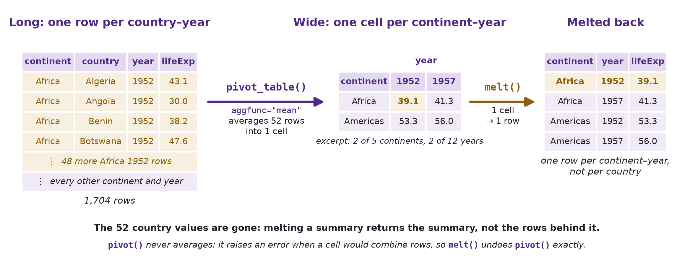
13.4.2 Example 1: Simple Pivot with Single Index
A table with continents as rows and years as columns, each cell holding the mean life expectancy of that continent’s countries in that year:
simple_pivot = gdp.pivot_table(
index="continent", # row labels
columns="year", # column labels
values="lifeExp", # what goes in the cells
aggfunc="mean", # how to combine the rows that share a cell
)
simple_pivot.round(1)| year | 1952 | 1957 | 1962 | 1967 | 1972 | 1977 | 1982 | 1987 | 1992 | 1997 | 2002 | 2007 |
|---|---|---|---|---|---|---|---|---|---|---|---|---|
| continent | ||||||||||||
| Africa | 39.1 | 41.3 | 43.3 | 45.3 | 47.5 | 49.6 | 51.6 | 53.3 | 53.6 | 53.6 | 53.3 | 54.8 |
| Americas | 53.3 | 56.0 | 58.4 | 60.4 | 62.4 | 64.4 | 66.2 | 68.1 | 69.6 | 71.2 | 72.4 | 73.6 |
| Asia | 46.3 | 49.3 | 51.6 | 54.7 | 57.3 | 59.6 | 62.6 | 64.9 | 66.5 | 68.0 | 69.2 | 70.7 |
| Europe | 64.4 | 66.7 | 68.5 | 69.7 | 70.8 | 71.9 | 72.8 | 73.6 | 74.4 | 75.5 | 76.7 | 77.6 |
| Oceania | 69.3 | 70.3 | 71.1 | 71.3 | 71.9 | 72.9 | 74.3 | 75.3 | 76.9 | 78.2 | 79.7 | 80.7 |
Each cell combines every country of one continent in one year, so aggfunc="mean" decides what the cell reports. This is the same table that groupby() followed by unstack() built in the previous section:
simple_pivot.equals(life_wide)Truepivot_table() is the one-call version of that two-step pattern, and it works directly on the long table.
13.4.3 Example 2: Multi-Level Index (Hierarchical Pivot)
Passing a list to index= gives the pivot table a two-level row index, here continent on the outer level and country on the inner one, so every country gets its own row, grouped by continent:
life_by_country = gdp.pivot_table(
index=["continent", "country"],
columns="year",
values="lifeExp",
aggfunc="mean",
)
print(life_by_country.shape)
life_by_country.head()(142, 12)| year | 1952 | 1957 | 1962 | 1967 | 1972 | 1977 | 1982 | 1987 | 1992 | 1997 | 2002 | 2007 | |
|---|---|---|---|---|---|---|---|---|---|---|---|---|---|
| continent | country | ||||||||||||
| Africa | Algeria | 43.077 | 45.685 | 48.303 | 51.407 | 54.518 | 58.014 | 61.368 | 65.799 | 67.744 | 69.152 | 70.994 | 72.301 |
| Angola | 30.015 | 31.999 | 34.000 | 35.985 | 37.928 | 39.483 | 39.942 | 39.906 | 40.647 | 40.963 | 41.003 | 42.731 | |
| Benin | 38.223 | 40.358 | 42.618 | 44.885 | 47.014 | 49.190 | 50.904 | 52.337 | 53.919 | 54.777 | 54.406 | 56.728 | |
| Botswana | 47.622 | 49.618 | 51.520 | 53.298 | 56.024 | 59.319 | 61.484 | 63.622 | 62.745 | 52.556 | 46.634 | 50.728 | |
| Burkina Faso | 31.975 | 34.906 | 37.814 | 40.697 | 43.591 | 46.137 | 48.122 | 49.557 | 50.260 | 50.324 | 50.650 | 52.295 |
142 rows, one per country, and 12 columns, one per year. Each country has exactly one life expectancy per year, so here each cell combines a single row and the mean simply returns it.
13.4.4 Practical Use: Temporal Comparisons
With each year in its own column, comparing two years is a matter of putting one column on each axis. The scatter plot below places every country’s 1957 life expectancy against its 2007 value; points above the dashed line y = x improved over the 50 years.
plot_data = life_by_country.reset_index() # continent back to a column for hue=
plt.figure(figsize=(9, 6))
sns.scatterplot(data=plot_data, x=1957, y=2007, hue="continent", s=60, alpha=0.7)
plt.plot([30, 85], [30, 85], "k--", linewidth=1, label="No change")
plt.xlabel("Life expectancy in 1957")
plt.ylabel("Life expectancy in 2007")
plt.title("50-year change in life expectancy by country")
plt.legend(bbox_to_anchor=(1.02, 1), loc="upper left")
plt.tight_layout()
plt.show()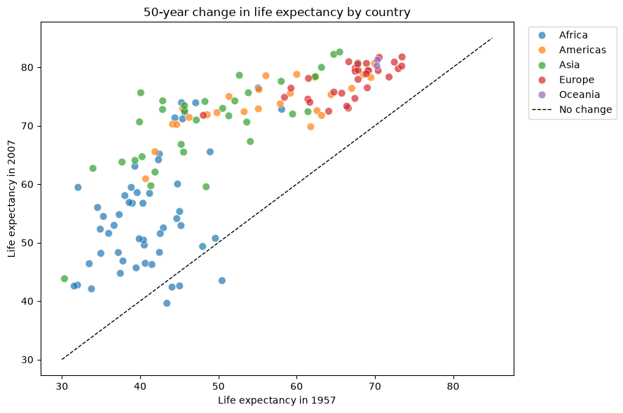
Almost every country sits above the line. The four below it, where life expectancy was lower in 2007 than in 1957, are all in Africa: Lesotho, Swaziland, Zambia, and Zimbabwe. In the long table this comparison would need the 1957 and 2007 rows of each country matched up first; in the wide table they are already side by side.
13.4.5 Visualizing Pivot Tables with Heatmaps
A wide table of numbers is also a grid, and sns.heatmap() colours each cell by its value, so patterns across rows and columns are visible at a glance:
plt.figure(figsize=(10, 20))
sns.heatmap(
life_by_country,
cmap="YlGnBu",
cbar_kws={"label": "Life expectancy (years)"},
)
plt.title("Life expectancy by country and year")
plt.xlabel("Year")
plt.ylabel("Continent – country")
plt.tight_layout()
plt.show()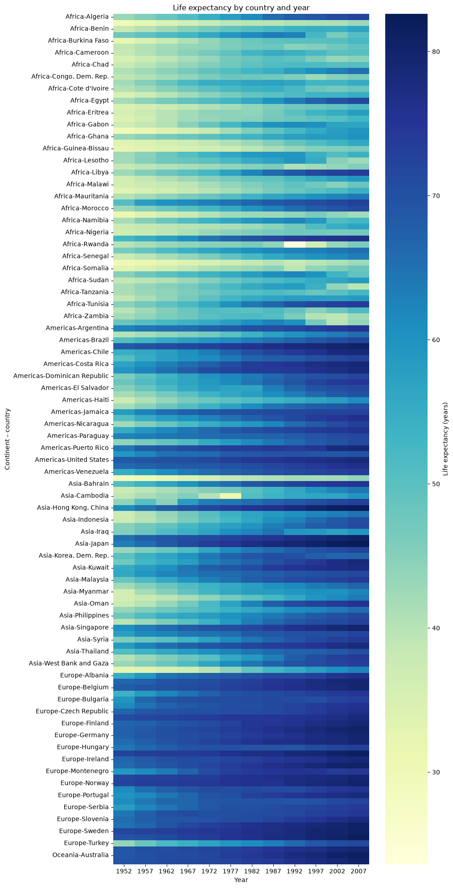
Reading across a row follows one country over time; reading down a column compares countries within a year. The colours darken from left to right almost everywhere, as life expectancy rose, and the African block at the top stays lightest throughout, with a few rows fading in the later years.
13.4.6 Choosing the Aggregation Function
aggfunc= accepts the same names as agg() in the previous chapter: "mean", "median", "sum", "count", "min", "max", and a lambda for a statistic of your own. If you leave it out, pivot_table() uses the mean. To calculate total population within each continent and year, use "sum"; to calculate the average country population, use "mean". Choose the aggregation to answer your question, and always name aggfunc=. A lambda receives the values of one cell as a Series, so the 90th percentile of life expectancy per continent and year is:
gdp.pivot_table(
index="continent", columns="year", values="lifeExp",
aggfunc=lambda x: x.quantile(0.9),
).round(1)| year | 1952 | 1957 | 1962 | 1967 | 1972 | 1977 | 1982 | 1987 | 1992 | 1997 | 2002 | 2007 |
|---|---|---|---|---|---|---|---|---|---|---|---|---|
| continent | ||||||||||||
| Africa | 45.0 | 47.9 | 49.9 | 52.1 | 55.5 | 58.0 | 61.3 | 63.5 | 65.2 | 67.6 | 69.8 | 71.3 |
| Americas | 65.4 | 67.9 | 69.1 | 69.8 | 71.1 | 73.1 | 73.7 | 74.7 | 75.2 | 76.5 | 77.8 | 78.7 |
| Asia | 60.0 | 63.0 | 65.7 | 67.9 | 69.5 | 70.8 | 72.1 | 74.1 | 75.7 | 77.0 | 78.4 | 79.7 |
| Europe | 71.9 | 72.5 | 73.2 | 73.7 | 73.8 | 75.4 | 76.2 | 76.9 | 77.6 | 78.8 | 80.1 | 80.9 |
| Oceania | 69.4 | 70.3 | 71.2 | 71.5 | 71.9 | 73.4 | 74.6 | 76.1 | 77.4 | 78.7 | 80.2 | 81.1 |
margins=True adds an All row and an All column that apply the same aggfunc to all the rows behind them, as crosstab() margins did for counts in the previous chapter:
gdp.pivot_table(
index="continent", columns="year", values="lifeExp",
aggfunc="mean", margins=True,
).round(1)| year | 1952 | 1957 | 1962 | 1967 | 1972 | 1977 | 1982 | 1987 | 1992 | 1997 | 2002 | 2007 | All |
|---|---|---|---|---|---|---|---|---|---|---|---|---|---|
| continent | |||||||||||||
| Africa | 39.1 | 41.3 | 43.3 | 45.3 | 47.5 | 49.6 | 51.6 | 53.3 | 53.6 | 53.6 | 53.3 | 54.8 | 48.9 |
| Americas | 53.3 | 56.0 | 58.4 | 60.4 | 62.4 | 64.4 | 66.2 | 68.1 | 69.6 | 71.2 | 72.4 | 73.6 | 64.7 |
| Asia | 46.3 | 49.3 | 51.6 | 54.7 | 57.3 | 59.6 | 62.6 | 64.9 | 66.5 | 68.0 | 69.2 | 70.7 | 60.1 |
| Europe | 64.4 | 66.7 | 68.5 | 69.7 | 70.8 | 71.9 | 72.8 | 73.6 | 74.4 | 75.5 | 76.7 | 77.6 | 71.9 |
| Oceania | 69.3 | 70.3 | 71.1 | 71.3 | 71.9 | 72.9 | 74.3 | 75.3 | 76.9 | 78.2 | 79.7 | 80.7 | 74.3 |
| All | 49.1 | 51.5 | 53.6 | 55.7 | 57.6 | 59.6 | 61.5 | 63.2 | 64.2 | 65.0 | 65.7 | 67.0 | 59.5 |
Read the margins carefully. The All row for 1952 is 49.1, the mean over all 142 countries in 1952, not the mean of the five continent values above it (54.5). Africa has 52 countries and Oceania two, so the All row is weighted toward Africa: a margin summarizes rows, not groups.
13.4.7 When Each Cell Holds One Value: pivot()
pivot() takes the same index=, columns=, and values= but has no aggfunc: it only rearranges values and never summarizes them. Use it when each row label and column label pair should match exactly one row, as each country and year does here:
gdp_wide = gdp.pivot(index="country", columns="year", values="gdpPercap")
gdp_wide.iloc[:5, :4].round(0)| year | 1952 | 1957 | 1962 | 1967 |
|---|---|---|---|---|
| country | ||||
| Afghanistan | 779.0 | 821.0 | 853.0 | 836.0 |
| Albania | 1601.0 | 1942.0 | 2313.0 | 2760.0 |
| Algeria | 2449.0 | 3014.0 | 2551.0 | 3247.0 |
| Angola | 3521.0 | 3828.0 | 4269.0 | 5523.0 |
| Argentina | 5911.0 | 6857.0 | 7133.0 | 8053.0 |
What pivot() adds over pivot_table() is a safety check. If two rows share a country and year, pivot() stops with ValueError: Index contains duplicate entries, while pivot_table() would quietly average the duplicates into one cell. Choose pivot() when a duplicate would mean a mistake in the data, and pivot_table() with a named aggfunc= when you intend each cell to summarize several rows.
13.4.8 Check the Keys: Duplicate Observations
Before pivoting, ask whether the proposed row and column labels identify a single observation. The complete Gapminder table has no repeated country–year pairs:
gdp[gdp.duplicated(["country", "year"], keep=False)]| country | continent | year | lifeExp | pop | gdpPercap |
|---|
An empty result means the keys are unique. To see what a problem looks like, append one row to toy_long, the three-country table from the start of the chapter, and inspect all rows sharing its key:
toy_duplicate = pd.concat([toy_long, toy_long.iloc[[0]]], ignore_index=True)
toy_duplicate[toy_duplicate.duplicated(["country", "year"], keep=False)]| country | year | lifeExp | |
|---|---|---|---|
| 0 | USA | 2000 | 76.8 |
| 9 | USA | 2000 | 76.8 |
keep=False marks every row in a repeated key, including the first. A pivot() on this table would raise a duplicate-entry error. If the repeated record is an accidental copy, correct it after checking its source. If repeated keys represent legitimate measurements, decide how to summarize them and use an explicit aggfunc. Averaging automatically can hide the difference between these two situations.
13.4.9 Missing Combinations Become Empty Cells
Now remove Canada’s 2005 observation from toy_long. Predict what will occupy that position in the wide result:
toy_incomplete = toy_long.loc[
~((toy_long["country"] == "Canada") & (toy_long["year"] == 2005))
]
toy_incomplete_wide = toy_incomplete.pivot(
index="country", columns="year", values="lifeExp"
)
toy_incomplete_wide| year | 2000 | 2005 | 2010 |
|---|---|---|---|
| country | |||
| Canada | 79.2 | NaN | 81.0 |
| Mexico | 74.1 | 75.2 | 76.5 |
| USA | 76.8 | 77.5 | 78.5 |
The Canada–2005 cell is NaN: no observation supplied a value for that combination. It is not zero. The wide table is a rectangular grid, so it has nine cells even though only eight observations were supplied. We will return to this example in the round trip after melt().
13.5 Melting from Wide to Long: melt()
Pivoting turned years into column headers; melt() turns column headers back into values. It moves in the opposite direction to pivoting, following the melt() arrow in Understanding Wide vs. Long Format: it takes a wide table and stacks chosen columns into two new columns, one holding the old column names and one holding the cell values. This section melts the country-by-year table back to long format, uses the long result for a grouped plot, and checks that pivoting and melting form a complete round trip.
13.5.1 Key Parameters
Each parameter names a set of columns, before or after the melt. The figure colours each parameter to match those columns, using the call from Example 1 below:
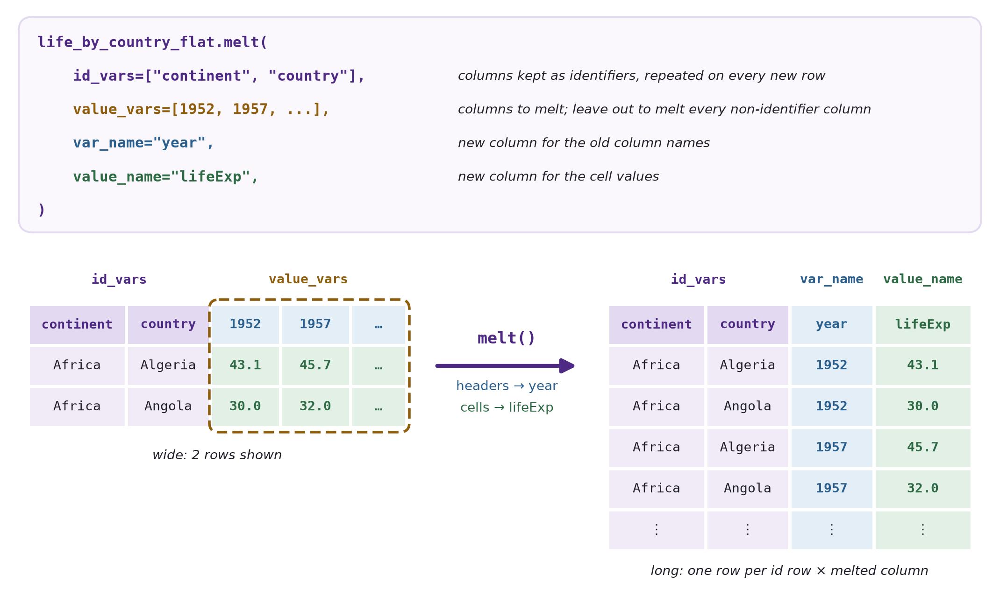
melt() call from Example 1, with each parameter colour-matched to its columns. id_vars=["continent", "country"] names the identifier columns, which are repeated on every new row. value_vars names the year columns to melt; leaving it out melts every non-identifier column. var_name="year" names the new column that holds the old column headers, 1952 and 1957, and value_name="lifeExp" names the new column that holds the cell values. Two wide rows with two melted columns become four long rows.13.5.2 Why Melt Your Data?
Melting puts the year labels into one column so we can use groupby("year") or seaborn’s x="year". The wide layout remains useful for comparisons between year columns.
13.5.3 Example 1: Basic Melt
melt() works on ordinary columns, so the first step is reset_index(), which turns continent and country from the index of life_by_country back into columns:
life_by_country_flat = life_by_country.reset_index()
life_by_country_flat.iloc[:3, :6]| year | continent | country | 1952 | 1957 | 1962 | 1967 |
|---|---|---|---|---|---|---|
| 0 | Africa | Algeria | 43.077 | 45.685 | 48.303 | 51.407 |
| 1 | Africa | Angola | 30.015 | 31.999 | 34.000 | 35.985 |
| 2 | Africa | Benin | 38.223 | 40.358 | 42.618 | 44.885 |
Now continent and country are the identifiers to keep, and every year column is melted:
life_long = life_by_country_flat.melt(
id_vars=["continent", "country"], # repeated on every new row
var_name="year", # old column names go here
value_name="lifeExp", # cell values go here
)
print(life_long.shape)
life_long.head()(1704, 4)| continent | country | year | lifeExp | |
|---|---|---|---|---|
| 0 | Africa | Algeria | 1952 | 43.077 |
| 1 | Africa | Angola | 1952 | 30.015 |
| 2 | Africa | Benin | 1952 | 38.223 |
| 3 | Africa | Botswana | 1952 | 47.622 |
| 4 | Africa | Burkina Faso | 1952 | 31.975 |
142 countries × 12 years = 1,704 rows: one per country–year, with the old year headers in the year column and the cell values in lifeExp. That row count is the first check on any melt: the number of id rows times the number of melted columns.
Check the column types too:
life_long.dtypescontinent str
country str
year object
lifeExp float64
dtype: objectyear has dtype object, but that does not mean its values are strings: here the values are Python integers stored in an object column. Convert the column to an integer dtype for consistent numeric operations and comparison with the original data:
life_long["year"] = life_long["year"].astype(int)
life_long.dtypescontinent str
country str
year int64
lifeExp float64
dtype: object
TipPredict before running
If you melt only 1952, 1977, and 2007 for all 142 countries, how many rows will you get? Which column will contain those year labels? Use value_vars=[1952, 1977, 2007] to check.
13.5.4 Example 2: Using Melted Data for Visualization
With year and continent each in a single column, seaborn can draw one line per continent directly. lineplot() averages the countries within each continent and year and shades one standard deviation around each mean:
plt.figure(figsize=(10, 5))
sns.lineplot(data=life_long, x="year", y="lifeExp", hue="continent",
estimator="mean", errorbar="sd")
plt.title("Life expectancy by continent, 1952–2007")
plt.xlabel("Year")
plt.ylabel("Mean life expectancy (years)")
plt.legend(bbox_to_anchor=(1.02, 1), loc="upper left")
plt.tight_layout()
plt.show()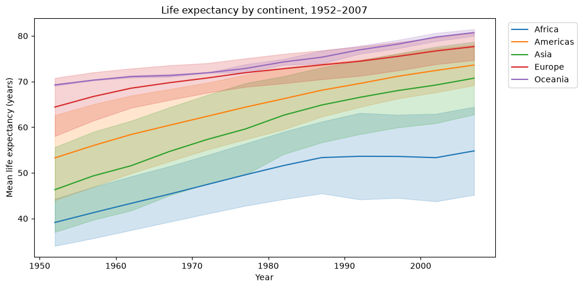
Every continent rises and Oceania and Europe stay on top. Africa starts lowest and gains least, and by 2007 its countries are the most spread out of any continent. The wide table holds exactly the same values, but hue="continent" and x="year" need each of those variables in its own column.
13.5.5 Pivot ↔︎ Melt: The Full Circle
For this complete country–year grid, pivoting and melting can recover the selected data. A round trip checks that the values and identifiers survived. life_long came from gdp by pivoting wide and melting back, so after sorting both the same way and keeping the same columns, the two tables should be identical:
cols = ["continent", "country", "year", "lifeExp"]
original = gdp[cols].sort_values(cols[:3]).reset_index(drop=True)
round_trip = life_long[cols].sort_values(cols[:3]).reset_index(drop=True)
round_trip.equals(original)TrueTrue: every row, value, and type matches. Without the astype(int) step above, the same check returns False, because the year column would have object dtype in one table and integer dtype in the other, even though its values are integers in both.
The round trip works because each cell of life_by_country held exactly one country’s value. When pivot_table() averages several rows into a cell, as in the figure at the start of the pivoting section, melt() returns those averages, not the rows behind them, so no reshape can recover the original table.
The round trip also needs a complete grid. Melting toy_incomplete_wide, the wide table from the pivoting section with Canada’s 2005 observation removed, includes its empty cell:
toy_incomplete_long = toy_incomplete_wide.reset_index().melt(
id_vars="country", var_name="year", value_name="lifeExp"
)
print("Original rows:", len(toy_incomplete))
print("Rows after pivot and melt:", len(toy_incomplete_long))
toy_incomplete_long[toy_incomplete_long["lifeExp"].isna()]Original rows: 8
Rows after pivot and melt: 9| country | year | lifeExp | |
|---|---|---|---|
| 3 | Canada | 2005 | NaN |
Eight input rows became nine rows after the round trip. Melting creates one row for every selected cell, including cells containing missing values. Here we know the extra row represents an absent observation. In other data, a NaN might belong to an observed record with a missing measurement. Do not automatically drop all missing values to force the row count to match: retain the original keys when that distinction matters.
13.6 Summary Cheat Sheet
| Goal | Code |
|---|---|
| Count the levels | df.index.nlevels, df.columns.nlevels |
| See the labels at one level | df.columns.get_level_values(0); 0 is outermost, -1 innermost |
| See the level names | df.index.names, df.columns.names (None means unnamed) |
| Grouped result to wide | df.groupby(["a", "b"])["v"].mean().unstack() |
| Choose which index level moves | unstack(level=0) or unstack(level="a"); default is the innermost |
| Wide with a two-level index to long | wide.stack(), or stack(level=0) for the outer column level |
| Select from multi-level labels | df.loc[("row_outer", "row_inner"), ("col_outer", "col_inner")] |
| Multi-level labels to plain columns | flat = df.reset_index() then flat.columns = ["_".join(c).strip("_") for c in flat.columns] |
| Swap rows and columns | df.T |
| Long table to wide, summarizing each cell | df.pivot_table(index="a", columns="b", values="v", aggfunc="mean") |
| Several row labels | pivot_table(index=["a", "c"], ...) |
| Your own statistic | aggfunc=lambda x: x.quantile(0.9) |
| Totals or overall means | pivot_table(..., margins=True) |
| Long table to wide, one value per cell | df.pivot(index="a", columns="b", values="v") |
| Wide table to long | df.melt(id_vars="id", var_name="name", value_name="value") |
| Melt only some columns | melt(..., value_vars=["c1", "c2"]) |
| Restore a type changed by reshaping | df["year"] = df["year"].astype(int) |
| Check a round trip | reshaped.equals(original) after sorting both the same way |
The rule to remember: after every reshape, check the number of rows, what each cell combined, and the column types, and name aggfunc= whenever a cell summarizes several rows.
13.7 Practice Activity: Long, Wide, and Back
Goal: Reshape one dataset in both directions, use each layout for what it does best, and check that nothing was lost or quietly averaged.
File: activity13.ipynb from the practice kit.
Submit: activity13.html through the final upload question in the Data Reshaping Canvas quiz.
This section contains the complete activity instructions. The starter loads the data and supplies spaces to record your work. Open activity13.ipynb from the folder prepared in Set Up Your Chapter Files, using the same project environment. The worked examples above are preparation, not additional submission requirements.
The starter loads gdp from the kit’s data/ folder and builds a small wide table, rainfall, with one row per city and one column per month.
A. Long to Wide, Two Ways
- Replace
Your Namein the opening Raw cell’sauthorfield. Run the setup cell; it must report the shapes(1704, 6)and(4, 5). - Build a continent-by-year table of median
gdpPercaptwice: once withgroupby()andunstack(), once withpivot_table()andaggfunc="median". Show that the two are identical withequals(). - Say in one sentence how many countries went into the Africa cells, and how you checked.
B. Compare Two Years
- Build a country-by-year table of
gdpPercapwithpivot()and compute each country’s ratio of 2007 to 1957 GDP per capita. - Show the five countries with the largest ratio, and report how many countries had lower GDP per capita in 2007 than in 1957.
C. Wide to Long, and Check
- Melt
rainfallinto a long table with columnscity,month, andrainfall_mm. Confirm the number of rows is the number of cities times the number of months. - Use the long table to compute mean rainfall per month with
groupby(), and draw one line per city with seaborn. Keep the months in January–April order in both the summary and the plot; alphabetical order is not chronological order.
D. When a Pivot Summarizes
- Build a continent-by-year table of
popwithaggfunc="sum", and another with the defaultaggfunc. - Say which table answers “how many people lived in each continent?”, and what the other one actually shows.
Render and Submit
Restart the kernel, run all cells in order, resolve unexpected errors, and save. Include your outputs and explanations for A–D, and a short Markdown completion note. From stat303-data-reshaping in the terminal, run:
quarto render activity13.ipynb --to htmlFollow the Quarto refresher: inspect the HTML and a copy opened outside the project folder, and confirm that every output appears and your name is on the report. Upload only activity13.html to the Data Reshaping Canvas quiz; keep your notebook locally.
HTML grading (16 points): both wide tables, the equals() check, and the count explanation (4); the country-by-year table, the five largest ratios, and the count of declines (4); the melted table with its row check, the monthly means, and the plot (4); both population tables and the explanation (3); name, readable report, and completion note (1).
13.8 Extended Practice
These longer exercises are additional practice, not requirements for the Canvas quiz. Work in a separate notebook beside your activity and load the data the way the chapter does. Include your code, outputs, and explanations.
13.8.1 Several Values at Once
Pass two columns to values=, as in pivot_table(index="continent", columns="year", values=["lifeExp", "gdpPercap"], aggfunc="mean"). The result has two-level column headers. Select the gdpPercap block, then try stack() on the result. Which layout would you hand to a reader, and which to seaborn?
13.8.2 A Heatmap of Change
Build the country-by-year table of lifeExp for Africa, subtract the 1952 column from every column, and draw the result as a heatmap with a diverging colour map centred at 0. Which countries stand out, and in which decades?
13.8.3 Melt Only Part of a Table
Starting from the country-by-year table, melt only the columns 1952, 1977, and 2007 with value_vars=. How many rows does the result have, and what happened to the other years?
13.8.4 Round Trip on GDP
Repeat the chapter’s round-trip check for gdpPercap: pivot to wide, melt back, restore the type, and confirm with np.allclose() that every value matches the original.
13.9 Before You Move On
Choose a tool by where the labels are and what each output cell should represent: stack() and unstack() move index or column levels; pivot() rearranges unique combinations; pivot_table() summarizes groups; and melt() turns columns into rows.
Before accepting a result, answer five questions:
- What does one row represent before and after the reshape?
- Which identifiers should uniquely identify an observation?
- Did any cell combine several observations, and was that intentional?
- Do the row count and missing combinations match what you expected?
- Are the column dtypes appropriate?
Continue to Combining Datasets, where you will choose join keys and check how matching rows affects the result.
References: pandas: reshaping and pivot tables, DataFrame.unstack, DataFrame.stack, DataFrame.T, DataFrame.pivot_table, DataFrame.pivot, DataFrame.melt, and DataFrame.equals.